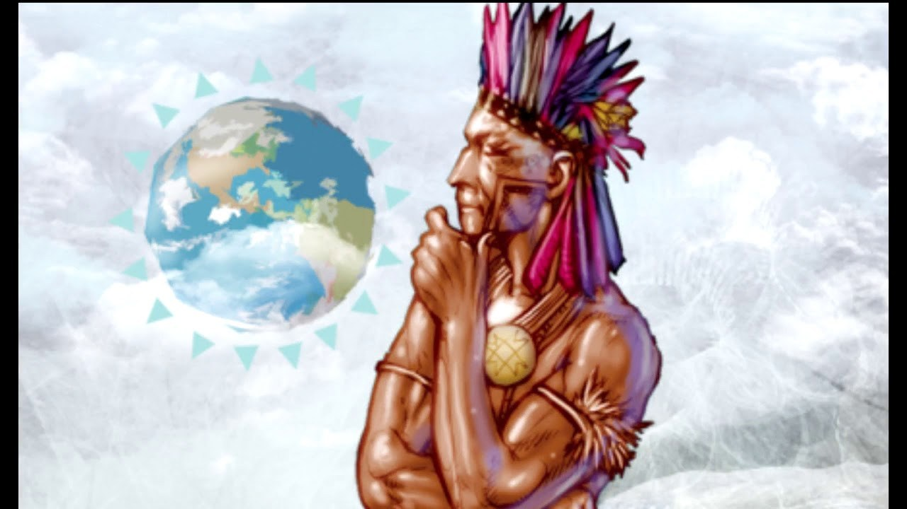
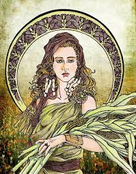

Figuras Mitológicas
contato
Deuses
Inicio/Sobre <
Nome: Ceuci
Cultura: Indigena
relativo a: deusa protetora das lavouras e moradias
breve historia: uma jovem moça chamada Ceuci estava sentada debaixo de uma árvore especial, o consumo de seu fruto era totalmente proibido para moças jovens, no entanto, Ceuci come esse fruto e fica grávida de um enviado do sol.

Nome: Wanadi
Cultura: Indigena
relativo a: deus da criação(responsável por criar tudo)
breve historia: o Sol criou três seres vivos. Dos três seres, apenas um nasceu perfeito, o Wanadi, enquanto os outros dois apresentaram falhas e por isso o Wanadi ficou responsável por criar o mundo.

Nome: Deméter
Cultura: Grega
relativo a: deusa da agricultura, casamento, gestação e das leis sagradas, além de ocupar um dos 12 espaços do Olimpo
breve historia: Ela teve um filho com Iásion que foi assassinado por Zeus. Mais tarde sua Filha Perséfone foi raptada por Hades e se casaram. Quando Perséfone encontra sua mãe o mundo passa pela primavera, mas quando ela volta para o inferno o inverno reina.
Nome: Caos
Cultura: Grega
relativo a: deus da criação
breve historia: Caos é o primeiro dos deuses que surgiu no universo, sendo ele o princípio de tudo, uma coisa sem forma onde estavam todas as latentes das coisas do universo.